06.27.26
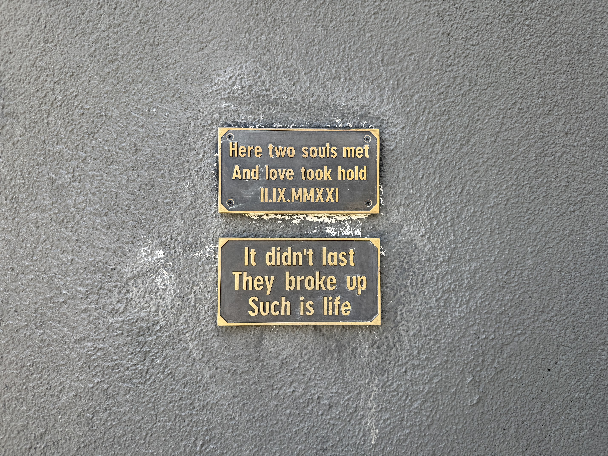
This one stuck with us.

This one stuck with us.
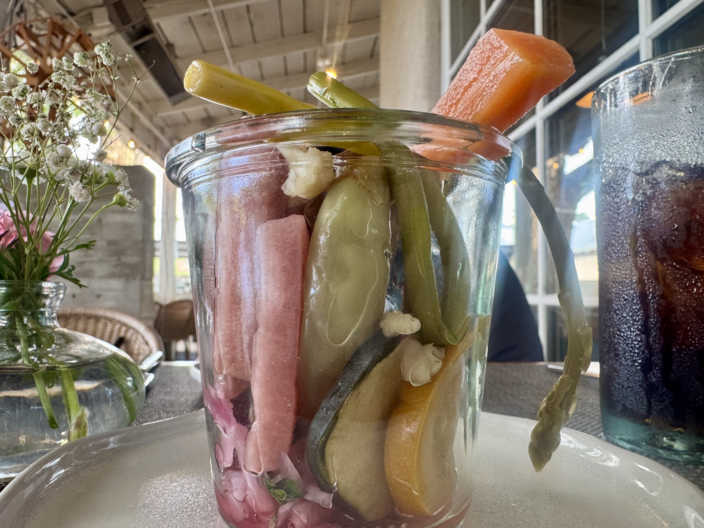
I enjoyed this pickle jar very dearly. It had the perfect variety of vegetables inside, and each was pickled individually. Every veggie hit different.
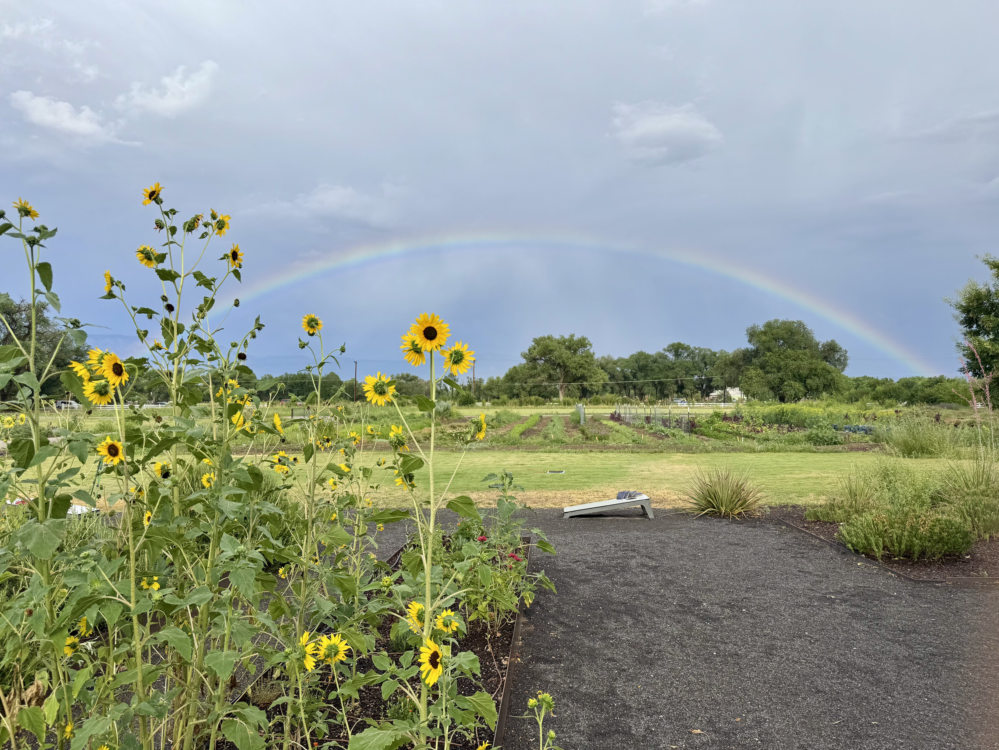
Sometimes you find a view and it reminds you that you are human. For me this was one of them.
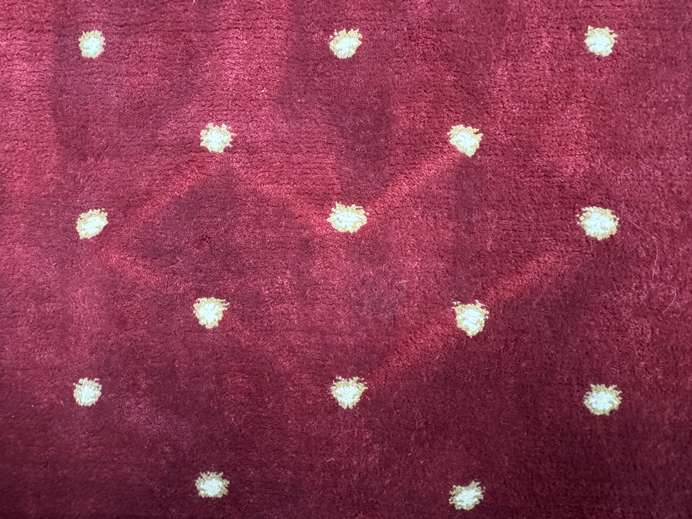
I feel it.
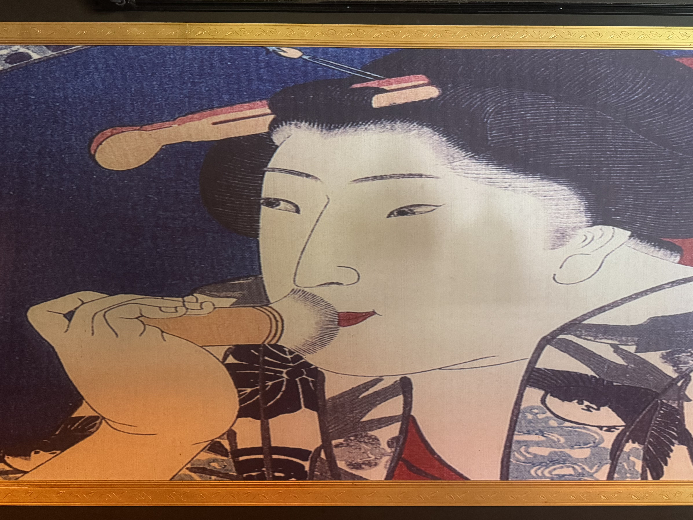
Went to this sushi restaurant. Food was shitty.
Shitty food can be good though. It reminds me that great food requires love.
When I eat out, I always create this image of a chef sweating their ass off, handling eight things at any given time, drinking a beer on the clock.
Chefs are so cool.
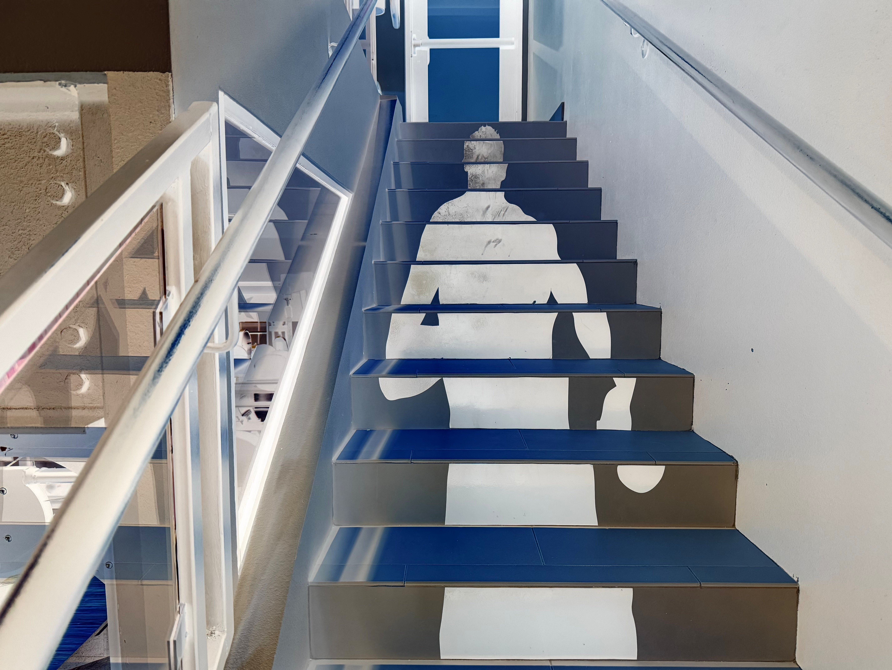
It's okay to have no destination in mind. Walking aimlessly is good too.
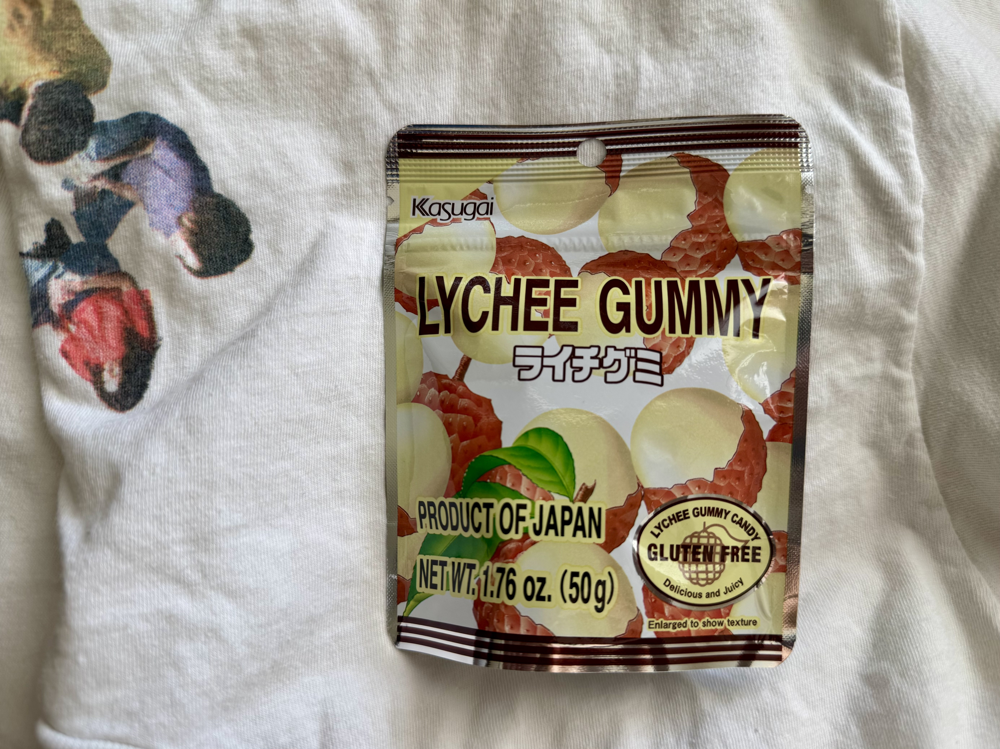
Lychee is my life fruit.
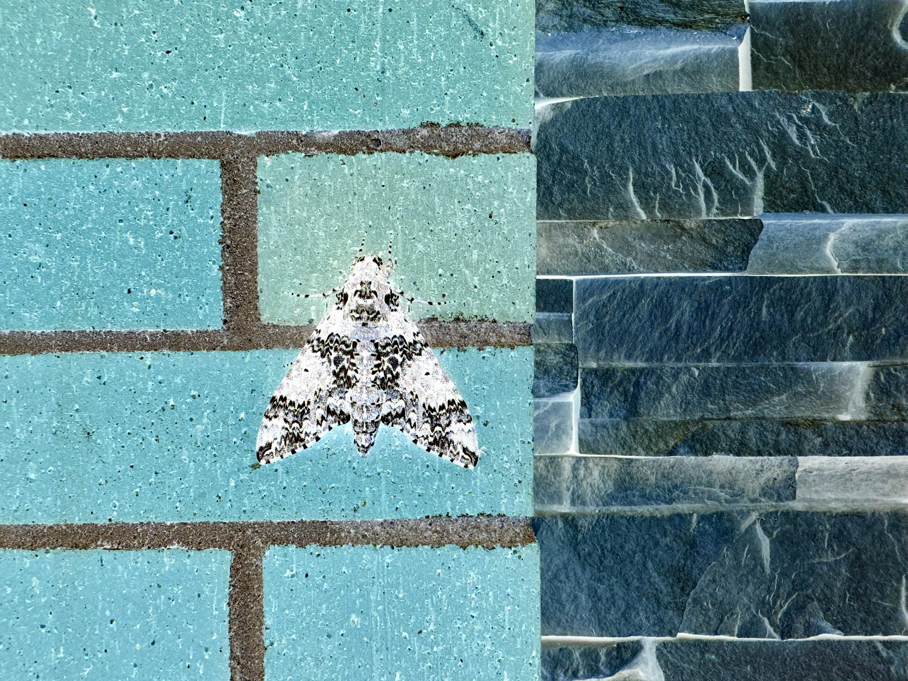
Found this very nice moth today. Was about the size of my palm. Super cool camouflage pattern on this one. Hope it stays safe out there.
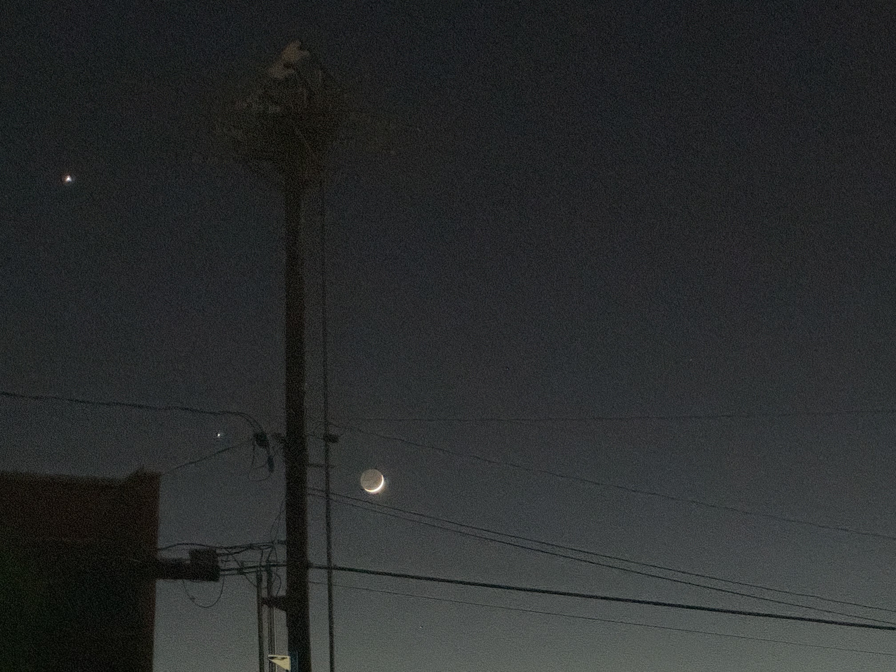
Took this very grainy picture of the new moon and all the industrial wiring and poles. I've taken this type of picture since like 2022. I just like how these two things complement each other.
I think food is the purest form of love.
I'm visiting my cousins, and my auntie made me this beautiful breakfast. You eat it with honey, and drink milk on the side.
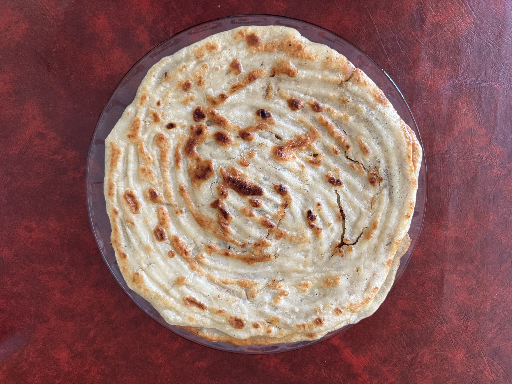
My grandma (her sister) used to make this for me all the time. She wanted to teach me, but we never got around to it. I regret that often.
Food has always been love to me, and I think cooking is art.
There's something intimate about creating a meal from scratch for someone.
Go cook for someone you love. Before it's too late and you regret it.
I visited my childhood home.
I remembered the cherry trees when I walked under them. They used to seem so giant. I can grab the cherries without being on my dad's shoulders now.
I remembered how I used to run for hours in the backyard.
I remembered many of my first memories ever all over again. Like when I made that cake from the Tom & Jerry cake mold. Or maybe how my bunny used to chew up the couches.
I will always remember that beautiful house.
Maybe, you're out there somewhere?
Sometimes I forget that we live in space. I remembered today. So, I left my handprints behind in the sand. I encourage you to do the same.
Leave your marks wherever you can so when your time comes the Earth remembers you.
It helps to realize how small we are. Taking it easy is okay.
Don't let that discourage you though, all I'm saying is that it isn't always that deep.
Recently, this image won't leave my head.
A few days ago I saw a working man, mid-40s. Hard hat in his left hand, utility belt on body. He was leaned on the tall chain link fence surrounding a Buddhist Temple. His eyes contently focused on the courtyard.
Two monks were performing a ritual outside. There was fire.
This man had just gotten off work. He stood, and he watched.
Just like he watched, I watched him.
+
It seems like, everybody craves freedom.
Who are you becoming?
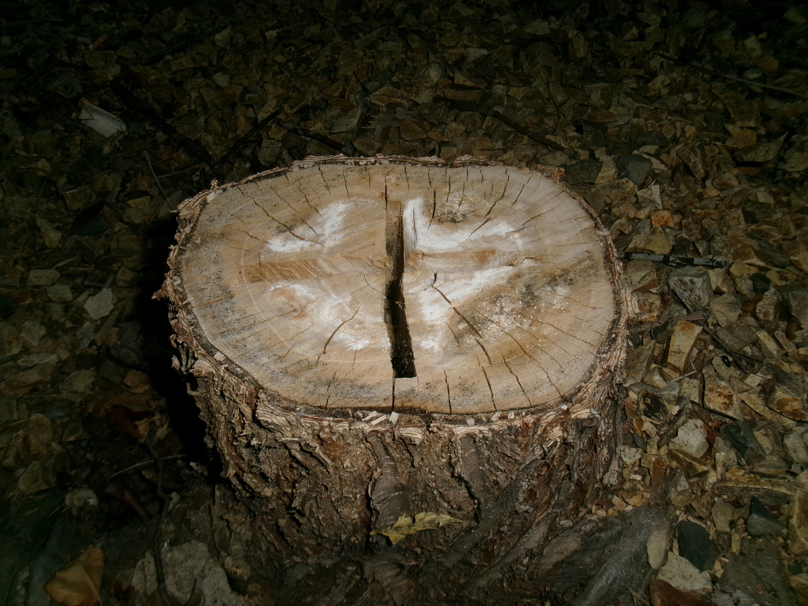
I am at a crossroads in my life right now.
Recently, I think about the people who exist in memory only.
Your names still carry weight in my mind. They hum in my guitar strings, and linger around our favorite spots.
Still — I am grateful.
I met one million people today. I shook so many hands. Managed to stay on top of my water consumption though. Got like five bottles in today.
The wind kept blowing dust in my eyes when I was outside. A few tree nuts hit my head, I think maybe three. Lowkey hurt.
I'm ready to cook tomorrow. My friends and I spent $159.37 at the grocery store today.
I forgot how pretty New Mexico is. Two days in a row now the sunset was all sorts of pink and orange. I love the desert. I'm made for it and it's made for me.
As I write this I feel my veins constricting my hands. Every day my veins get tighter around me. They control me like an exoskeleton. Maybe I just need to take a deep breath.
Let's do box breathing before sleep.
Ready?
[ in · · · · ]
[ hold · · · · ]
[ out · · · · ]
[ hold · · · · ]
Repeat a couple times.
Goodnight now.
I just took two ibuprofen. My head is pounding.
Me and Sydney drove from Phoenix to Albuquerque, it probably took eight hours with some stops. We'll be here for the next two months or so, and we pick up Shane from the airport tonight. #Internship grind starts tomorrow.
Stop 1, approx. 13:30MST: In-N-Out
Yes this is the best fast food burger spot in America and I'm sorry if you've never experienced it (you're missing out). I ordered a 2x2, animal style, & fries. Water on the side.
Demolished my burger, probably took about four minutes. Keep in mind, my best time is two minutes and twenty-seven seconds... for a 4x4. For those that are unfamiliar, that is: two buns, four meat patties, four slices of cheese, caramelized grilled onions, pickles, and house spread.
I saw the liveliest tree ever outside of that In-N-Out.
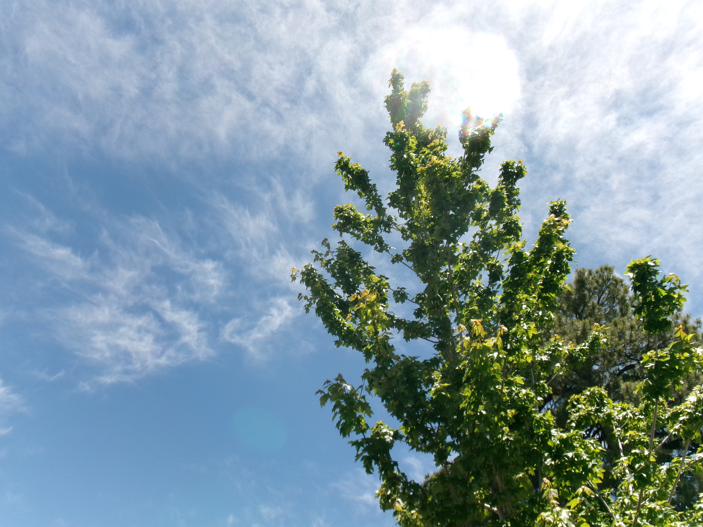
Stop 2, approx. 14:22MST: Valley off the I-40
I spotted a lonesome tree. Had to visit.
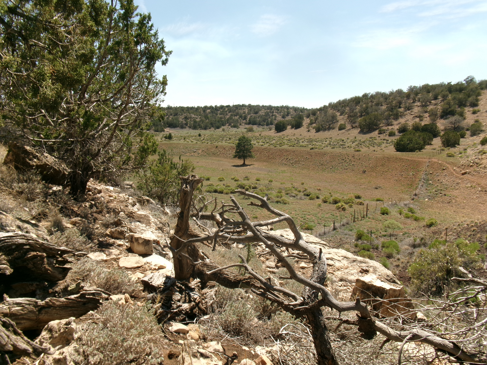
It feels like every organism in this little valley is staring right at it. The shrubs, the rocks, the dead branches, even the sun chose to stand right above it. Everyone stares at him. He still stands tall nonetheless.
Stop 3, approx. 18:34MDT: Maverik gas station
Final stop of the trip. Found this very very odd structure.
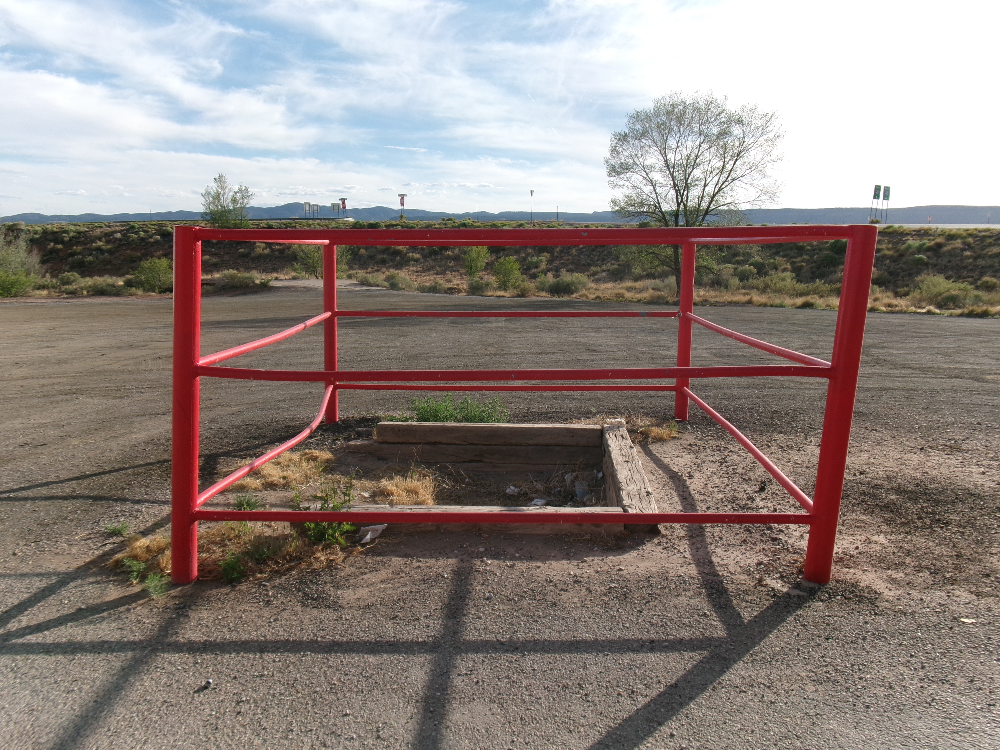
What does it hide? Why does it lean ever so slightly to the right? Very beautiful red though. Casted some pretty neat shadows too.
Maverik gas stations remind me of my friends Max and Lucas. They visited me over Spring break and we had one right by the place we stayed. Our temporary home was a very quiet place. Very homey. Maverik was open late nights, so we stopped by a few times. We decided that Maverik knows us quite well.
My head is no longer pounding. Sydney and I picked up Shane. Now we are all eating Domino's pizza. Too much fast food today I think. I will start cooking very soon to avoid this from happening again.
The apartment we are staying in for the next two months is very spacious. It's beautifully furnished and I'm excited to learn to love this place. I'm getting that feeling like it's the first day of school tomorrow. Kind of nervous, excited to meet new people. I can tell though, that this time I am going to have here will be so fulfilling. Already feeling some sort of nostalgia somehow.
If you made it this far, thanks for reading. See u next time.
Dad made me this for the first time many years ago. I'll never forget. Now I make it when the fridge cooperates.
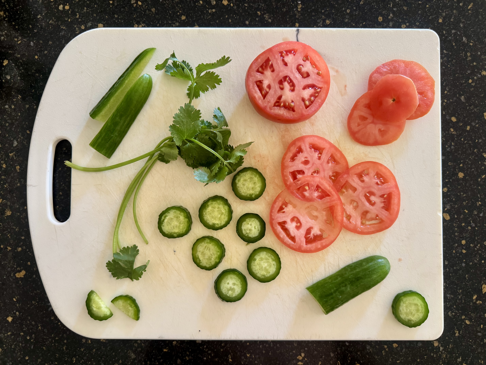
Ingredients:
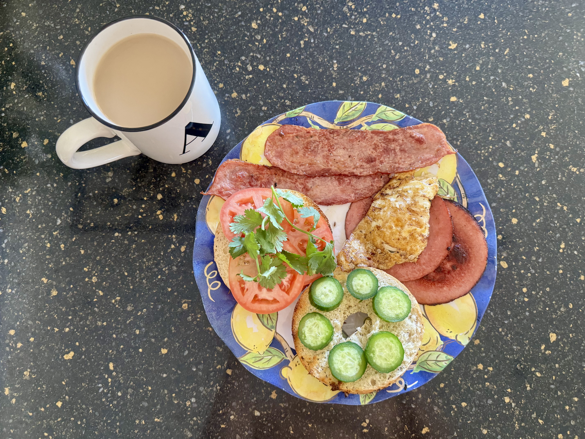
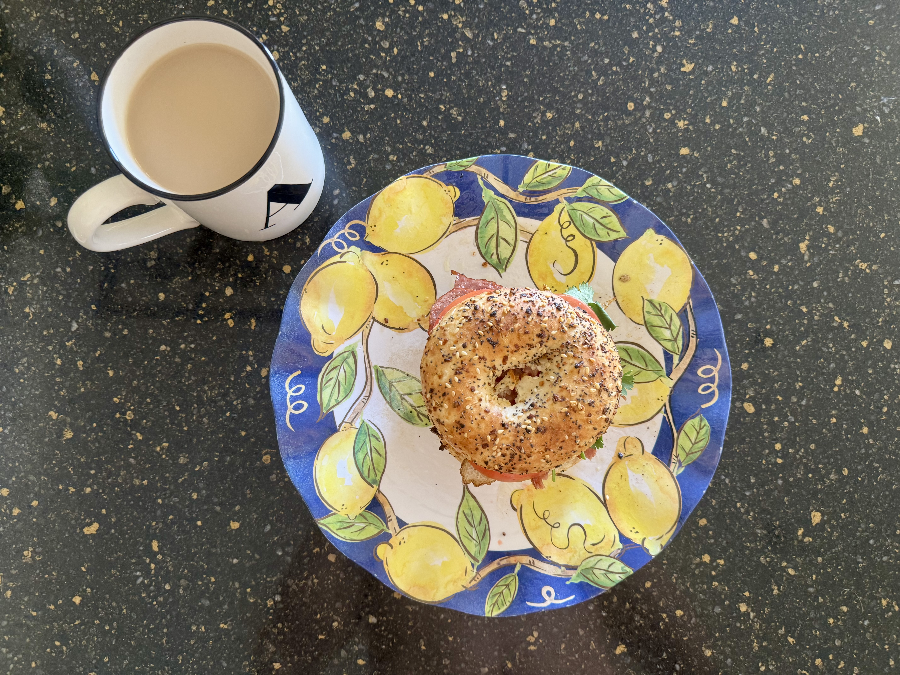
I encourage you to try. Send me a picture if you do.
I've been feeling very sentimental these days. Some days more than others. It's easy to forget what makes you, you.
Recently, I've been remembering through my childhood.
Through this blog I will live, and through my eyes, you will see.